Сахарный диабет 1 типа
Сахарный диабет — это целая группа заболеваний, основным признаком которых является высокий уровень глюкозы в крови (или по-научному гипергликемия: «гипер» — большой, «глик» — сладкий, «емия» — кровь). Название болезни — Диабет — произошло от греческого «диабайо» «диабайо» — «течь, вытекать», поскольку одним из симптомов заболевания является выделение большого количества мочи (по-научному это называется полиурией: «поли» — много, «урия» — моча).
Отличие сахарного диабета 1 типа

Процентное соотношение людей, живущих СД 1 типа составляет менее 10% среди всех людей с СД. Чаще всего этот тип диабета возникает в детском, подростковом или юношеском возрасте (до 30 лет). Характерна «яркая» клиническая картина начала заболевания с выраженными симптомами гипергликемии: снижение веса, слабость, жажда, выделение большого количество мочи, наличие ацетона в моче, запах ацетона в выдыхаемом воздухе, иногда — кома.
Это происходит из-за гибели b-клеток поджелудочной железы — они разрушаются собственной иммунной системой. Точная причина такой агрессии до сих пор неизвестна. Существует генетическая предрасположенность к СД 1 типа, которая проявляется при взаимодействии с провоцирующим фактором (вирусные инфекции, например).
Прекращение выработки инсулинаТаким образом, глюкоза не может проникнуть в клетки. Уровень глюкозы в крови повышается, при этом клетки страдают от дефицита энергии. Чтобы его восполнить, начинается распад собственных жиров, однако в процессе образуются крайне токсичные кетоновые тела, организм подвергается интоксикации. Если не восполнить дефицит инсулина, то развивается крайне серьезное осложнение — диабетический кетоацидоз или кетоацидотическая кома.
Единственным способом поддержания нормального уровня сахара в крови при сахарном диабете 1 типа является пожизненное введение инсулина. По сути, это заместительная терапия, которая должна восполнить дефицит отсутствующего этого гормона.
 Пожизненное введение инсулина